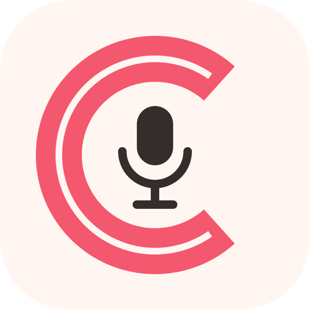
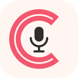
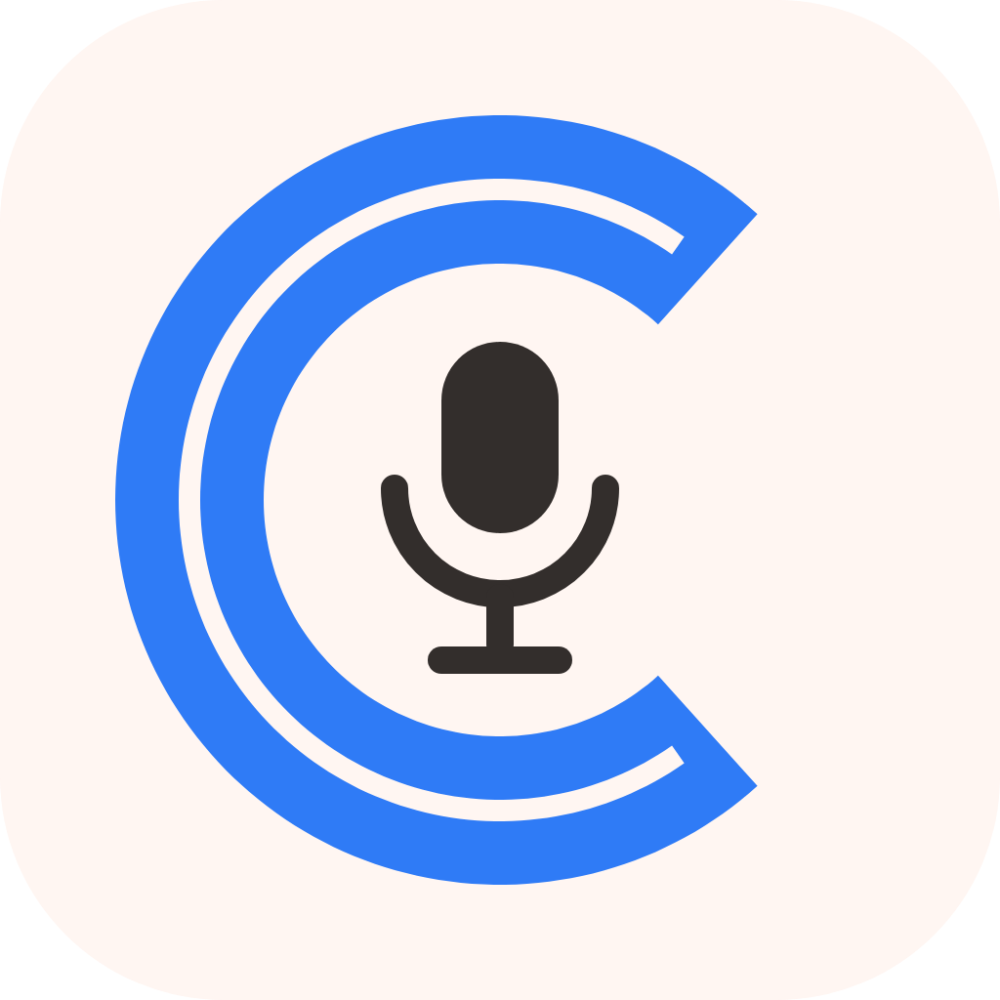

押して、喋って、離すだけ。
AIが整えた文章が、そのままカーソル位置に入ります。
ダウンロードもインストーラーも要りません。Claude Code に一言お願いするだけです。
Claude デスクトップアプリの Code タブ に貼り付けてください。
アプリの取得から設定まで、最後まで付き添って進めてくれます。所要 10 分ほどです。

録音中
整え中点滅している間は動いています。消えたら貼り付け完了です。
Claude Code が画面を開いて案内してくれます。ここでは何をするのかだけ先にお伝えします。
それぞれ役割が違い、3つとも必要です。
| 許可 | これが無いと |
|---|---|
| マイク | 録音しても無音になります |
| 入力監視 | fnキーを押しても何も起きません |
| アクセシビリティ | 文章はできるのに貼り付きません |
文字起こしと清書は Google の Gemini が行います。無料の範囲で足ります。
| アプリ | 無料です。受講生の方はご自由にお使いください。 |
|---|---|
| Gemini | 無料枠で足ります。1日500回まで使えます。長さではなく回数で数えるので、10分喋っても1回です。 |
| 勝手に課金されないか | されません。支払い情報を登録していないため、枠を使い切ってもエラーになるだけです。 |
| 音声はどこへ | Google の Gemini にだけ送られます。作者のサーバーは通りません。 |
| 設定の保存先 | ご自身のMacの中だけです。APIキーも外部には送られません。 |
| 喋った内容の扱い | 無料枠で使う場合、送った音声と文章はGoogleの製品改善（AIの学習を含む）に使われることがあり、担当者が読むことがあります。Googleの規約に「機密情報・個人情報を無料のサービスに送らないでください」と書かれています。お客様の氏名・連絡先や、外に出せない話は喋らないでください。 （有料で使う場合は学習に使われません。無料枠のままで足りるので、ふだんは無料のままで構いません） |
Claude Code に「こえタイプが動かない」と言えば、記録を読んで原因を調べてくれます。
「入力監視」の許可が入っていない可能性が高いです。Claude Code に「こえタイプが動かない」と伝えてください。設定画面を開いて確認してくれます。
マイクが別のものになっていることがあります。メニューバーのこえタイプのアイコンを押し、「マイク」から選び直してください。AirPodsをお使いの場合は本体のマイクに切り替えると安定します。
AirPodsはマイクを使う瞬間に通話モードへ切り替わる仕組みで、そのとき音が途切れたり拾えなかったりします。メニューから「MacBook〜のマイク」を選んでください。AirPodsは音を聴く方に使えます。
「ポン」と鳴ってから喋ってください。押した直後の0.3秒ほどはまだマイクが開いていません。
枠が戻るのは日本時間の夕方（16〜17時ごろ）です。翌朝ではありません（Googleは太平洋時間の0時にリセットするため）。キーに問題はありません。別のモデルへ自動で切り替わるので、それまでも続けて使えることが多いです。
メニューバーのアイコン →「言葉を覚えさせる…」に、1行1件で まちがい、正しい表記 と書いて保存してください。区切りは読点でかまいません。次からは必ず正しくなります。
現時点では使えません。Apple Silicon（M1以降）のMac専用です。Windows版は準備中です。
ソースコードは公開しています。ご自身のClaude Codeに「この中身を解説して」「ここを変えて」と伝えれば、自分好みに作り替えられます。